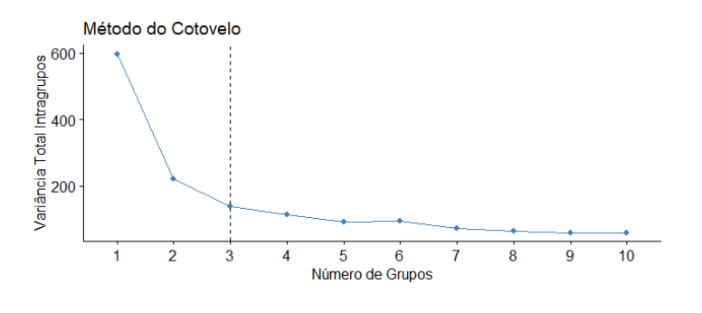
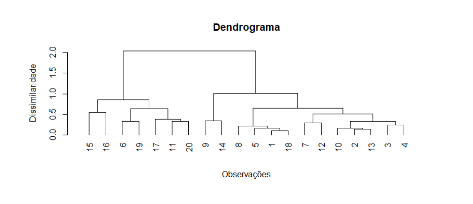

dados_indicadores <- readRDS('dados/dados_indicadores.rds')9 Análise de Agrupamentos
Como descrito anteriormente e reforçado aqui, na análise de agrupamento, buscamos identificar regiões no espaço dos dados que possuam um grande número de observações próximas umas das outras. Essas regiões são chamadas de clusters. A ideia é agrupar indivíduos que sejam semelhantes entre si e diferentes dos indivíduos em outros clusters. Essa técnica é chamada de aprendizado não supervisionado, pois não utilizamos uma variável específica como referência para avaliar o resultado do agrupamento.
Formalmente, os clusters são definidos da seguinte forma:
Cada cluster é um grupo de observações;
Todos os indivíduos pertencem a pelo menos um cluster;
Dois clusters diferentes não possuem observações em comum.
Ao realizar o agrupamento de dados, é importante utilizar um método que maximize as diferenças entre os clusters, ao mesmo tempo que minimiza as diferenças dentro de cada cluster. Para isso, são utilizadas medidas de similaridade ou dissimilaridade, que quantificam as diferenças entre as observações.
As medidas de dissimilaridade mais comumente usadas são a distância euclidiana e a distância euclidiana quadrática, como apresentado abaixo respectivamente:
\[ \begin{split} d(\mathbf{x}_i, \mathbf{x}_i') = \sqrt{\sum_{j=1}^{p} (x_{ij} - x_{i'j})^2}\\ d^2(\mathbf{x}_i, \mathbf{x}_i') = \sum_{j=1}^{p} (x_{ij} - x_{i'j})^2 \end{split} \]
Outras medidas menos utilizadas incluem a distância absoluta e a distância de Mahalanobis, que leva em consideração a matriz de covariância, respectivamente representadas como:
\[ \begin{split} d_a(\mathbf{x}_i, \mathbf{x}_i') = \sum_{j=1}^{p} |x_{ij} - x_{i'j}|\\ d_M(\mathbf{x}_i, \mathbf{x}_i') = \sqrt{(\mathbf{x}_i - \mathbf{x}_i')' \mathbf{S}^{-1} (\mathbf{x}_i - \mathbf{x}_i')} \end{split} \]
Uma maneira comum de representar as dissimilaridades entre os objetos em um conjunto de dados é por meio de uma matriz de dissimilaridade. Essa matriz mostra os valores de dissimilaridade \(a(x_i,x_j)\) entre cada par de objetos \(x_i\) e \(x_j\) com \(i,j = 1,2,\dots,N.\)
\[ \begin{align} A = \begin{bmatrix} a(x_1,x_1) & a(x_1,x_2) & \cdots &a(x_1,x_N) \\ a(x_2,x_1) & a(x_2,x_2) & \cdots & a(x_2,x_N) \\ \vdots &\vdots & \ddots &\vdots \\ a(x_N,x_1) & a(x_N,x_2) & \cdots & a(x_N,x_N) \end{bmatrix}. \end{align} \]
As matrizes de dissimilaridade podem ser obtidas com apoio da função dist(), onde o tipo de distância (Euclidiana por exemplo), é passada no parâmetro da função, method , veja a seguir, um exemplo aplicado ao conjunto de indicadores obstétricos, esse DataSet séra o referncial para a sessão atual, será considerado apenas as colunas dos indicadores.
dist_euclidian <- dist(scale(dados_indicadores[,-c(1:4)]), method = "euclidean")O códio acima cria e armazena um objeto do tipo dist que será utilizado em exemplos futuros.
A análise de agrupamento é uma ferramenta valiosa que permite identificar estratos em uma população e detectar outliers. É importante considerar a escalabilidade do método, sua capacidade de lidar com diferentes tipos de variáveis e clusters de formatos variados. Além disso, a robustez em relação a outliers e a capacidade de agrupar dados de alta dimensionalidade são considerações essenciais. Existem diversos métodos de agrupamento na literatura, cada um com vantagens e desvantagens. Nas próximas sessões, exploraremos os métodos considerados e suas aplicações adequadas, bem como métodos de avaliação de qualidade para os agrupamentos.
9.1 Métodos de Agrupamentos
Neste capítulo, vamos explorar diferentes maneiras de resolver o desafio do agrupamento de dados. Existem abordagens tradicionais, como o particionamento, que envolve dividir o conjunto de dados em grupos distintos. Além disso, temos os métodos hierárquicos, nos quais os grupos são organizados em uma estrutura de árvore.
Outra abordagem interessante é considerar a densidade dos pontos no espaço. Nesse caso, procuramos identificar regiões mais densas separadas por áreas menos povoadas. Esses métodos, conhecidos como baseados em densidade, oferecem uma perspectiva diferente na análise dos dados.
Também existe uma classe de métodos que utiliza técnicas de decomposição espectral. Esses métodos reduzem a dimensionalidade dos dados, preservando as informações relevantes dos grupos presentes. São os chamados agrupamentos espectrais, que exploram as propriedades dos autovalores e autovetores da matriz de similaridade dos dados.
Cada uma dessas abordagens possui suas próprias características, vantagens e limitações.
9.1.1 Métodos por Particionamento
Os métodos por particionamento são comumente utilizados para agrupar dados, onde cada partição representa um cluster. Esses métodos são baseados em distância e envolvem a realocação iterativa das observações entre os clusters para obter um particionamento otimizado.
A escolha do número de clusters é um aspecto importante, pois influencia diretamente a qualidade do agrupamento. Uma abordagem comum é o método do cotovelo, que considera a relação entre a variância total intraclusters e o número de grupos criados. O método do cotovelo considera que aumentar o número de clusters reduz a variância, mas em algum ponto, não há melhora significativa na granularidade do agrupamento. Esse ponto ótimo, que indica o número adequado de clusters, é identificado no gráfico por uma curva tracejada.

A variância total intraclusters é calculada utilizando as distâncias euclidianas quadráticas entre as observações e o centróide do respectivo grupo. O centróide \(c_l\) de um grupo \(C_l\) é obtido através da média das observações atribuídas a esse cluster, utilizando a fórmula:
\[c_l = \frac{1}{|\mathcal{C}_l|} \sum{i \in \mathcal{C}_l} \mathbf{x}_i\]
A variância total intraclusters é calculada como a soma das distâncias euclidianas quadráticas entre as observações e os respectivos centróides, utilizando a fórmula:
\[\sum_{l=1}^{K} \sum_{i \in \mathcal{C}_l} |\mathbf{x}_i - \mathbf{c}_l|^2\]
Essas são algumas das abordagens dos métodos por particionamento, aqui será considerado o k-médias e o k-medóides com os algorítmos PAM e CLARA, que serão apresentados a seguir com exemplos de aplicações.
9.1.1.1 K-médias
O K-médias é um método amplamente utilizado para agrupamento de dados. Ele busca encontrar K partições dos dados, minimizando a variância. O algoritmo de (Lloyd 1982) é comumente usado para realizar o K-médias. Ele envolve os seguintes passos:
escolha dos K centróides iniciais;
particionamento dos dados com base na menor distância para cada centróide;
atualização dos centróides com as novas observações atribuídas a eles;
repetição dos passos 2 e 3 até que não haja mais mudança de agrupamento. É possível definir um número máximo de iterações para otimizar o método computacionalmente.
Uma alternativa é o algoritmo de (Hartigan e Wong 1979), que adiciona uma etapa de validação para alterar os agrupamentos. A cada iteração, verifica-se se houve atualização nos centróides dos grupos. Nesse caso, um novo objeto só é atribuído a um cluster se a soma das distâncias quadráticas diminuir.
No entanto, o método K-médias apresenta limitações ao lidar com clusters de formas não convencionais ou grupos com tamanhos muito discrepantes. Além disso, ele é sensível a outliers, pois a inclusão de um dado extremo pode influenciar significativamente o valor do centróide. A aplicação para o software R, tanto do método de agrupamento quanto a escolha do número de clusters K pelo método do cotovelo, segue abaixo, será considerado os dados padronizados para retirar qualquer tendência em função da diferença de escala ou amplitude dos dados:
set.seed (1122)
#BIBLIOTECAS
library(ggplot2)
## padronizacao dos dados
dados_norm <- as.data.frame(scale(dados_indicadores[,-c(1:4)]))
## escolhendo k pelo metodo do cotovelo
cotovelo_kmedias <- factoextra::fviz_nbclust(dados_norm ,
kmeans,
method = "wss") +
geom_vline( xintercept = 7, linetype = 2) +
labs(x = "Numero de Grupos", y = "Variancia Total Intragrupo", title = "K-medias")
## ajustando k-medias com o numero de grupos escolhido
k_medias <- kmeans(dados_norm,
centers = 7)A função kmeans é uma ferramenta poderosa disponível no R para realizar o agrupamento de dados utilizando o método K-médias. A função kmeans retorna três principais objetos:
Cluster_centers: É uma matriz que representa os centróides finais de cada cluster. Cada linha dessa matriz representa um centróide, com as coordenadas correspondentes às variáveis do conjunto de dados.Cluster_assignment: É um vetor que contém as atribuições de cada observação a um determinado cluster. Cada elemento desse vetor representa o número do cluster ao qual a observação foi atribuída. O valor 1 representa o primeiro cluster, o valor 2 representa o segundo cluster e assim por diante.Within_cluster_sum_of_squares: É um valor que representa a soma dos quadrados das distâncias de cada observação em relação ao seu respectivo centróide. Essa medida indica a variabilidade dos dados dentro de cada cluster. Quanto menor o valor, mais compacto e homogêneo é o cluster.
9.1.1.2 K-medóides
Em situações com valores extremos, os algoritmos K-medóides surgem como uma alternativa ao cálculo do centróide, evitando a influência excessiva desses valores na representação central de cada grupo. O algoritmo PAM (Partitioning Around Medoids) proposto por (Kaufman e Rousseeuw 2009) considera um custo para as trocas de medóides a cada iteração. O custo é calculado como a diferença da variância total intragrupo considerando um novo medóide (observação não medóide) em comparação com o medóide atual. A variância total intragrupo é uma medida da dispersão dos pontos dentro de um grupo.
Para realizar o agrupamento, o algoritmo PAM segue os seguintes passos:
Escolha inicial dos \(K\) medóides a partir do conjunto de dados;
As observações não selecionadas como medóides são atribuídas ao grupo cujo medóide é o mais próximo;
Selecionar aleatoriamente uma observação não medóide \(o_r\);
Calcular o custo de se mudar o medóide atual para \(o_r\);
Caso o custo seja menor que 0, realizar a troca de medóide;
Repetir os passos 2 a 5 até que não haja mais mudanças de agrupamento.
O custo de mudança do medóide atual para outra observação é calculado como a diferença da variância total intragrupo considerando a nova observação como representante em comparação com o medóide atual.
Além disso, é comum utilizar a medida de distância absoluta no lugar da distância euclidiana quadrática para calcular a distância entre os pontos e os medóides. O método pode ser visto abaixo:
## escolhendo k pelo metodo do cotovelo
cotovelo_pam <- factoextra::fviz_nbclust(dados_norm ,
cluster::pam,
method = "wss") +
geom_vline( xintercept = 7, linetype = 2) +
labs(x = "Numero de Grupos",
y = "Variancia Total Intragrupo",
title = "PAM")
pam <- cluster::pam(dados_norm ,
k = 7)A função cluster::pam no R retorna os seguintes elementos:
medoids: Um vetor contendo os índices das observações selecionadas como medóides finais de cada cluster.clustering: Um vetor contendo os rótulos dos clusters aos quais cada observação foi atribuída.objective: O valor da medida de dissimilaridade total do agrupamento obtido.isolation.distance: Um vetor com as distâncias de isolamento de cada observação em relação ao seu medóide correspondente.clusinfo: Uma lista com informações adicionais sobre os clusters, incluindo o número de observações em cada cluster e a soma das distâncias de dissimilaridade intracluster.
Esses elementos fornecem informações sobre os medóides finais selecionados, a atribuição de clusters para cada observação, o valor objetivo do agrupamento, as distâncias de isolamento e informações adicionais sobre cada cluster.
Para lidar com grandes conjuntos de dados, o algoritmo CLARA (Clustering Large Applications) divide o conjunto em amostras menores e aplica o PAM nessas amostras. Em seguida, calcula a variância total intragrupo para cada agrupamento gerado. A partição que apresentar menor variância total intragrupo é selecionada como o resultado final do algoritmo. Observe abaixo a aplicação para o R:
cotovelo_clara <- factoextra::fviz_nbclust(dados_norm ,
cluster::clara ,
method = "wss") +
geom_vline( xintercept = 7, linetype = 2) +
labs(x = "Numero de Grupos",
y = "Variancia Total Intragrupo",
title = "CLARA")
clara <- cluster::clara(dados_norm ,
k = 7, samples = 10)A função cluster::clara no R retorna os seguintes resultados:
medoids: Um objeto pamobject contendo os medóides finais de cada cluster.clustering: Um vetor com os rótulos dos clusters atribuídos a cada observação.objective: O valor da medida de dissimilaridade total do agrupamento obtido.isolation.distance: Um vetor com as distâncias de isolamento de cada observação em relação ao seu medóide correspondente.clusinfo: Uma lista com informações adicionais sobre os clusters, como o número de observações em cada cluster e a soma das distâncias de dissimilaridade intracluster.samples: Uma lista contendo os índices das observações selecionadas em cada subamostra.call: A chamada original da funçãocluster::claraque foi utilizada.
Esses resultados fornecem detalhes sobre os medóides finais escolhidos, a atribuição dos clusters para cada observação, o valor objetivo do agrupamento, as distâncias de isolamento, informações adicionais sobre os clusters, as subamostras utilizadas e a chamada original da função.
9.1.2 Métodos Hierárquicos
Os métodos hierárquicos são utilizados para agrupar dados em diferentes níveis de granularidade. Existem duas abordagens principais: aglomerativa e divisiva.
Na abordagem aglomerativa, os grupos são construídos a partir do nível mais baixo, onde cada observação forma um cluster separado, até atingir o nível mais alto, onde todos os dados estão em um único grupo. A fusão dos clusters ocorre com base na dissimilaridade entre eles. As medidas de dissimilaridade mais utilizadas, entre dois grupos, também conhecidas como linkages, podem ser definidas da seguinte forma:
- Método do vizinho mais próximo (Single linkages): Considera a menor distância entre todas as possíveis combinações de observações de dois grupos.
\[ d(C_l,C_{l'}) = \min_{x_i \in C_l ;x_k \in C_{l'}} d(x_i,x_j) \]
- Método do vizinho mais distante (Complete linkages): Utiliza a maior distância entre todas as possíveis combinações de observações de dois grupos.
\[ d(C_l,C_{l'}) = \max_{x_i \in C_l ;x_k \in C_{l'}} d(x_i,x_j) \]
- Método da média das distâncias (Average linkages): Calcula a média das distâncias entre as observações de dois grupos.
\[ d(C_l,C_{l'}) = \frac{1}{|C_l||C_{l'}|}\sum_{x_i \in C_l ;x_k \in C_{l'}} d(x_i,x_j) \]
- Método do centróide (Centróide linkages): Considera a distância entre os centróides de cada grupo como medida de dissimilaridade.
\[ d(C_l,C_{l'}) = d^2(c_l,c_{l'}) \]
- Método de Ward: Minimiza a variância dentro dos grupos ao fundir os clusters que levam à menor variação possível.
\[ d(C_l,C_{l'}) = \frac{n_ln_{l'}}{n_l + n_{l'}} d^2(c_l,c_{l'}) \]
No contexto dos métodos hierárquicos de agrupamento, a abordagem aglomerativa é amplamente utilizada e estudada. Isso se deve ao fato de que a abordagem divisiva apresenta um custo computacional mais elevado, uma vez que em cada iteração é necessário identificar a melhor divisão do grupo para maximizar a dissimilaridade. Portanto, o algoritmo para o agrupamento hierárquico aglomerativo consiste em:
Cada observação é inicialmente atribuída a um cluster separado.
Com base no método de dissimilaridade escolhido, calcula-se a dissimilaridade entre todos os pares de grupos.
Os dois grupos com a menor dissimilaridade são fundidos em um único grupo.
Repetem-se os passos 2 e 3 até que todas as observações estejam em um único grupo.
Já na abordagem divisiva, tomando o algoritmo DIANA (Divisive Analysis), inicia-se com um grupo único que contém todas as observações e, em cada etapa, divide-se o grupo em dois com base na maior dissimilaridade entre as observações. O algoritmo DIANA segue os seguintes passos:
Todas as observações são agrupadas em um único grupo.
A observação com a maior dissimilaridade média em relação aos pontos do mesmo grupo é separada em um novo grupo.
Cada observação do grupo inicial é atribuída ao novo grupo se a dissimilaridade média em relação aos objetos desse grupo for menor do que a dissimilaridade média em relação aos demais pontos do grupo inicial.
4.Calcula-se o diâmetro de todos os grupos (a maior dissimilaridade entre duas observações) e seleciona-se o grupo com o maior diâmetro.
- Repetem-se os passos 2 a 4 até que cada observação esteja em um grupo separado.
No agrupamento hierárquico, a visualização dos clusters é feita por meio de um dendrograma, um gráfico ramificado que mostra as junções e divisões dos clusters. A altura do ramo no primeiro nó do dendrograma representa a dissimilaridade entre os grupos divididos. Para determinar o número de grupos a partir do dendrograma, busca-se uma grande diferença de altura (dissimilaridade) ao adicionar um cluster aos dados. Uma característica dos métodos hierárquicos é que as decisões de agrupamento ou divisão não são desfeitas, ou seja, não há troca de observações entre os clusters. Decisões de união ou divisão mal feitas podem resultar em grupos de baixa qualidade. Além disso, esses métodos não são bem dimensionados, pois cada decisão de mesclagem ou divisão requer a avaliação de muitos objetos ou clusters. Pelo exemplo abaixo, uma possível resposta de número adequado de clusters seria de dois ou três grupos.
 Os agrupamentos hierárquicos podem ser obtidos de maneira rapida com o apoio computacional, onde inicialmente, com uso das funções hclust e cluster::diana, é obtido um objeto da classe “hclust” e da clase “diana” respectivamente, esses objetos contém informações sobre o agrupamento hierárquico realizado, incluindo a estrutura do dendrograma, as distâncias entre os objetos e outras propriedades relacionadas. Seguido pela seleção, com base no dendrograma, do número K ideal de clusters (Não necessariamente só um K), e o “corte” da árvore aglomerativa no valor ideal identificado. É apresentado abaixo para todos os métodos citados a aplicação para o R, supondo a distância utilizada como a euclidiana calculada no início do capítulo
library(ggdendro)
#AGLOMERATIVOS ############
#METODO WARD -----
##CRIAR O OBJETO HCLUST
agl_ward <- hclust(dist_euclidian , method = "ward.D2")
# PLOT DO DENDROGRAMA
dendograma_ward <- plot(cut(as.dendrogram(agl_ward), h = 20)$upper ,
main = "Ward - cortado em H = 20")
# "corte" NOS RESPECTIVOS VALORES IDEAIS DE NUMERO DE CLUSTERS
agl_ward_res <- cutree(agl_ward , k = 3:8)
# segue o mesmo para todos os outros metodos
#METODO SINGLE LINKAGE -----
agl_single <- hclust(dist_euclidian , method = "single")
dendograma_single <- plot(cut(as.dendrogram(agl_single), h = 4)$upper ,
main = "Vizinho mais Proximo - cortado em H = 4",
xlab = "")
agl_single_res <- cutree(agl_single , k = 3:8)
#METODO COMPLETE LINKAGE -----
agl_complete <- hclust(dist_euclidian , method = "complete")
dendograma_complete <- plot(cut(as.dendrogram(agl_complete), h = 10)$upper ,
main = "Vizinho mais Distante - cortado em H = 10")
agl_complete_res <- cutree(agl_complete , k = 3:8)
#METODO AVARAGE LINKAGE -----
agl_ave <- hclust(dist_euclidian , method = "average")
dendograma_ward <- plot(cut(as.dendrogram(agl_ave), h = 15)$upper ,
main = " Media das Distancias - cortado em H = 15")
agl_ave_res <- cutree(agl_ave, k = 3:8)
#METODO CENTROIDE LINKAGE -----
agl_cent <- hclust(dist_euclidian , method = "centroid")
dendograma_ward <- plot(cut(as.dendrogram(agl_cent), h = 15)$upper ,
main = " Centroide - cortado em H = 15")
agl_cent_res <- cutree(agl_cent , k = 3:8)
####### DIVISIVO (DIANA) #########
diana <- cluster::diana(dist_euclidian ,
diss = TRUE ,
metric = "euclidean",
keep.diss = FALSE ,
keep.data = FALSE
)
dendrograma_diana <- plot(cut(as.dendrogram(diana), h = 7)$upper ,
main = "Diana - cortado em H = 7")
diana_res <- cutree(diana , k = 3:8)